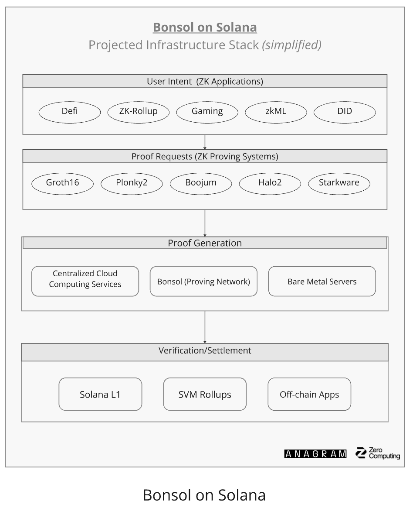

Bonsol Collective Guidelines
What is it?
Bonsol is a zk-prover network and off-chain compute framework built on Solana leveraging the Risc0 zkVM. Bonsol empowers developers to easily integrate zk-proofs into any app of their choice. The purpose of this collective is to gather highly specialized teams and applications across different layers of the Bonsol tech stack, sharing a vision to explore and build verifiable compute on Solana. We imagine this to be a coalition that will have significant impact and help usher Solana into the next era of growth through interesting use cases and useful network infrastructure.
Bonsol Collective members will come together to bring their respective expertise from the application layer and the foundational layers of the Bonsol tech stack to build the most efficient, optimized, and useful zk prover & off-chain compute network on Solana.
Tech Stack of Bonsol Network
Application Layer: Gaming, AI agents, DeFi, DePIN, Energy, etc.
Foundational Layers of Bonsol Tech Stack:
- Proving Systems
- Proof Generation
- Market Design
- Prover Nodes
- Proof Verification and Settlement
- ZK Specialized Hardware
Expectations
Questions:
- by joining the collective, are the teams committing to contributing anything?
- is active participation required or can teams be more passive members?
Active Participation:
During this phase, we wish to start onboarding applications to the Bonsol network and collaborating on research for interesting use cases to integrate verifiable compute and enable complex applications that have not been able to live on the blockchain yet.
For teams from the foundational layers of the Bonsol Tech Stack, we hope to leverage your expertise and obtain feedback on our thought and build process behind the core designs zk prover market of the Bonsol network.
We understand teams may have commitments to building their own projects. To incentivize participation, we will be doing a review process near the end of Q1 / beginning of Q2 to select active members who played a key role in kickstarting the network. Active members have eligibility to submit what they've contributed to the network and enter the first round of RPGF funding to access a pool of 1M token rewards.
Benefits
For Apps - Distribution, eventual token incentives
For Network Contributors - Inclusion to Core Contributors and eventual token incentives
We recognize there is no single best solution for network designs and there will be an ever evolving process to maintain and improve the core components of Bonsol - which is why the Bonsol Collective will also act as a funnel towards the Core Contributors: a small curated working group for active members with niche expertise in verifiable compute, who participate in key design decisions and core contributions to the open development of the Bonsol network. (this will be incentivized via RPGF or other mechanisms)